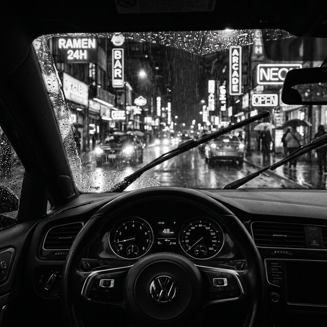
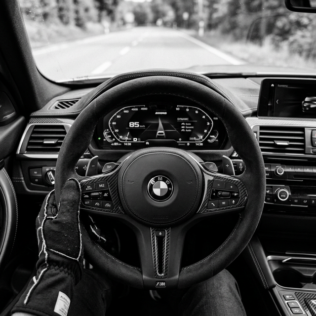

Hatchback kültürü sadece pratik bir şehir otomobili kullanmaktan ibaret değildir. Özellikle "Hot Hatch" olarak adlandırılan yüksek performanslı modeller, otomobil tutkunları için apayrı bir yaşam tarzını ifade eder. Geceleri yankılanan o tok egzoz sesi, yere yakın sürüş dinamikleri ve inanılmaz modifiye potansiyeli bu segmenti eşsiz kılan unsurların başında gelir.
Özellikle gri ve siyah ağırlıklı, yere yakın ve hafifletilmiş jantlarla donatılmış bir hatchback, gece karanlığında şehir ışıkları altında süzülürken adeta sokakların kalp atışını temsil eder. Sadece düzlükte hızlanmakla kalmayıp, kısa aks mesafesi ve rijit gövde yapısı sayesinde virajlarda gösterdiği çeviklik her sürücüde saf bir adrenalin yaratır. Uzun gövdeli sedanlar veya hantal suv'lara meydan okuyan bu çeviklik, performansın sadece büyük motorlardan ibaret olmadığının bir nevi kanıtıdır.

Kültürün Kalbi: Modifiye ve Topluluk
Bu otomobillerin en büyük cazibesi uçsuz bucaksız kişiselleştirilebilme imkanlarıdır. Motor yazılımları, daha büyük turboşarjlar, soğutma sistemleri ve spor yaylar ile fabrika çıkışı standart bir otomobilin karakteri agresif bir yarış aracına dönüştürülebilir. Modifiye sektörü bu araçlar etrafında dönerken, aftermarket parçalarının zenginliği adeta kişisel bir lego setine sahip olmanızı sağlar.
Gece buluşmaları, tuning etkinlikleri ve performans testleri bu sıcak kültürün ayrılmaz bir parçasıdır. Gittiğiniz herhangi bir otopark buluşmasında, otomobilin kalbine inen teknik detayları heyecanla tartışan insan gruplarına rastlarsınız. Bu ortamda saygı kazanmak için servete ihtiyacınız yoktur, ince düşünülmüş zekice bir süspansiyon ayarı sizi zirveye taşıyabilir.

Hatchback sahipleri arasında görünmez bir bağ vardır. Trafikte karşılaştığınız başka bir modifiyeli hatchback ile korna çalmadan bile selamlaşabilir, bir benzin istasyonunda saatlerce performans parçaları üzerine sohbet edebilirsiniz. Marka veya model bağımsız olarak kurulan bu aidiyet duygusu, günümüzün kalabalık, iletişimsiz dünyasında eşsiz bir vaha gibidir.
“Bir hot hatch sahibi olmak, şehir içi trafiğinde bile her an gaza basmaya hazır bir yarışçı ruhuna sahip olmaktır.”
Otolibre Bakış Açısıyla Sokaklar
Otolibre olarak bu asi ve tutkulu ruhu yansıtan detaylara büyük önem veriyoruz. İncelediğimiz özel tasarımlı hatchback modelleri, sokak kültürünün tüm agresifliğini modern bir karanlık estetikle harmanlıyor. Gece otoban sürüşlerinden dar dağ yollarına kadar sürüşün en eğlenceli ve erişilebilir halini sunmaya devam ediyorlar.